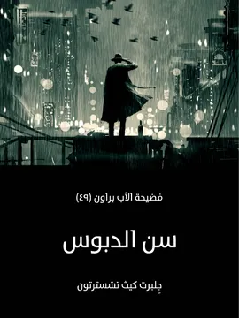

سن الدبوس: فضيحة الأب براون (٤٩)

قراءة عربية أصلية محددة النطاق في الصفحات 9 إلى 14 من ملف PDF المرتبط، وليست تلخيصا كاملا للكتاب. نناقش ما تدعمه هذه المقاطع فقط.
اللورد ستانز والملكة الأكسفوردية: «لا شك أنك على حق»
يقدم المقطع شخصية من طراز تشسترتون الساخر: كان اللورد ستانز رجلًا نحيلًا طويل الرأس غائر العينين وله شعر أشقر خفيف للغاية في طريقه إلى الصلع، وكان أكثر الأشخاص الذين التقاهم القس مراوغة؛ لم يكن أحد يضاهيه في استغلال الملكة الأكسفوردية المتمثلة في قول «لا شك أنك على حق» بحيث تبدو وكأنها تعني «لا شك أنك تظن أنك على حق»، أو مجرد التعليق بعبارة «أتظن ذلك؟» بحيث تشير ضمنيًا إلى الإضافة اللاذعة «ستظن ذلك». لكن الأب براون ظن أن الرجل لم يكن يشعر بالملل فحسب، بل بقدر ضئيل من المرارة أيضًا، لكن كان من الصعب تخمين ما إذا كان ذلك بسبب استدعائه من جبل الأوليمب للسيطرة على مثل هذه النزاعات العمالية، أو فقط لأنه لم يعد في الواقع قادرًا على السيطرة عليها. بشكل عام، فضل الأب براون مجموعة الشركاء الأكثر برجوازية: السير هوبرت ساند وابن أخيه هنري، على الرغم مما اعتمل بداخله من شكوك فيما إذا كان لديهما بالفعل العديد من الأيديولوجيات؛ فقد حصل السير هوبرت ساند على قدر كبير من الشهرة في الصحف كراع للرياضة وكرجل وطني في العديد من الأزمات خلال الحرب العالمية.
زاوية وحدود القراءة
قراءة موجزة من ص ٩ إلى ص ١٤ من أصل ٢٦ صفحة، تعرض مطلع القصة، لا القصة كاملة.
الطبعة والقراءة
هذه الترجمة العربية صادرة ومتاحة مجانًا من مؤسسة هنداوي بشكل قانوني؛ حيث إن نص العمل الأصلي يقع في نطاق الملكية العامة تبعًا لقوانين الملكية الفكرية.
تنزيل PDF المجاني ↓ القراءة والمصدر الرسمي ↗